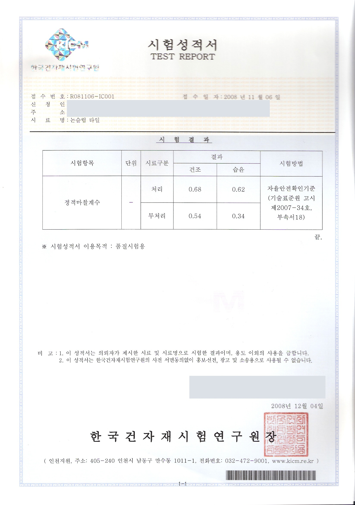

물기 있는 바닥에서 시공 전후가 얼마나 달라졌을까요? 같은 시험 안에서 처리 전과 후를 비교하면 효과를 읽을 수 있습니다.
0.68은 건조 조건의 정적마찰계수, 1.08은 맨발·습윤 조건의 C.S.R·B 지수입니다. 측정 방법과 접촉 조건이 다른 별개의 시험값입니다. 두 수치의 크기보다, 각 시험에서 처리 전후가 어떻게 달라졌는지를 보세요.
물기 있는 타일, 0.34에서 0.62로
정적마찰계수는 접촉한 물체가 움직이기 시작할 때의 저항을 나타냅니다. 같은 타일 시료를 같은 방법으로 시험했을 때, 물기 있는 조건의 값이 처리 후 높아졌습니다.
| 시험 조건 | 처리 전 | 처리 후 |
|---|---|---|
| 물기 있는 바닥 | 0.34 | 0.62 |
| 마른 바닥 | 0.54 | 0.68 |
처리 후에는 마른 바닥과 젖은 바닥의 차이가 작네요?
이 시험에서는 물기가 있는 조건의 저항이 크게 개선되어, 처리 후 두 조건의 값이 가까워졌습니다. 핵심은 마른 바닥의 숫자를 크게 만드는 것보다 물기가 있을 때 떨어지던 미끄럼 저항을 높였다는 점입니다. 이 결과가 모든 바닥에서 같은 값이나 같은 체감을 보장한다는 뜻은 아닙니다.
시험성적서에서 직접 확인하세요
시료는 논슬립 타일, 시험방법은 성적서에 기재된 자율안전확인기준입니다. 공개용 사본은 신청자와 주소 등 식별정보를 가렸으며, 시험방법과 결과는 원문 그대로입니다.

맨발·습윤 시험은 별도의 지표로 읽습니다
C.S.R·B는 맨발 조건의 미끄럼 저항을 평가하는 지수입니다. 앞의 정적마찰계수와 측정 방법이 다르므로 직접 비교하지 않습니다. 수돗물 400g/㎡를 적용한 습윤 조건에서 바닥타일을 비교했습니다.
| 시험 조건 | 처리 전 | 처리 후 |
|---|---|---|
| 맨발·습윤 | 0.48 | 1.08 |
서로 다른 시험을 한 줄로 순위를 매기지 않습니다
별도 동적 미끄럼 저항성 시험에서 확인된 타일의 값은 0.61입니다. 이 역시 앞의 정적마찰계수나 C.S.R·B와 같은 척도로 비교할 수 없습니다. 숫자를 볼 때는 시험방법·시료·습윤 여부·접촉 조건을 함께 확인하세요.
실제 현장은 재질과 마감, 오염, 신발, 이용 환경이 다릅니다. 닥터 논슬립은 방문 시 작은 구역에 먼저 시공해 실제 사용할 바닥에서 효과와 외관을 함께 확인합니다.